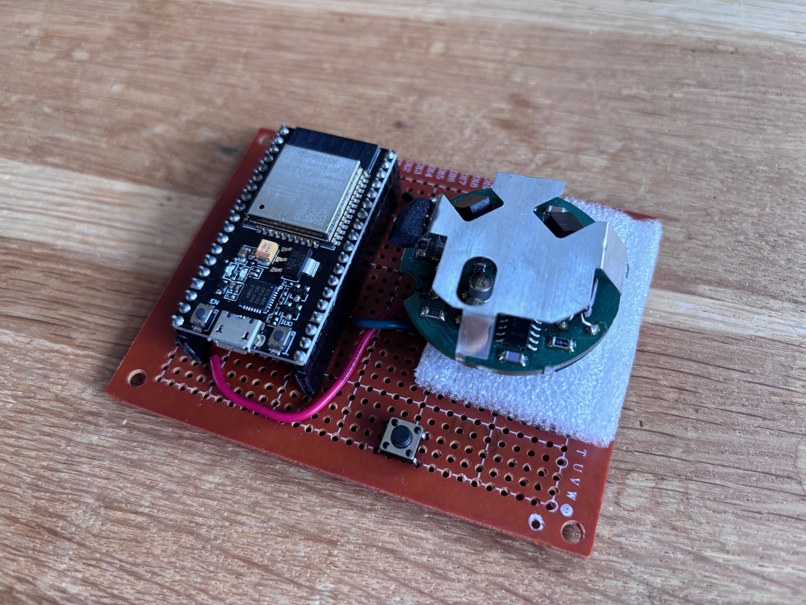
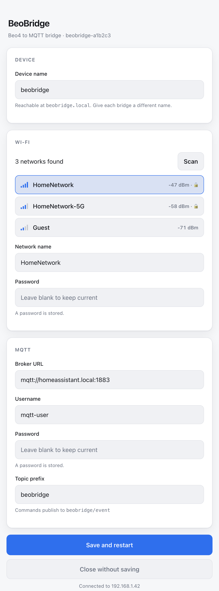

Beo4 Remote to Home Assistant
BeoBridge connects a Bang & Olufsen Beo4 remote to Home Assistant. B&O uses a 455 kHz infrared carrier rather than the usual 38 kHz, so ordinary receivers see nothing at all — this project salvages the discrete 455 kHz front end from a B&O LC2 light dimmer and drives it from an ESP32. Decoded commands are published over MQTT, where Home Assistant automations turn them into scenes and individual light control through Hue. Wi-Fi and broker settings are configured from a built-in web portal, opened by holding a button on the device.

